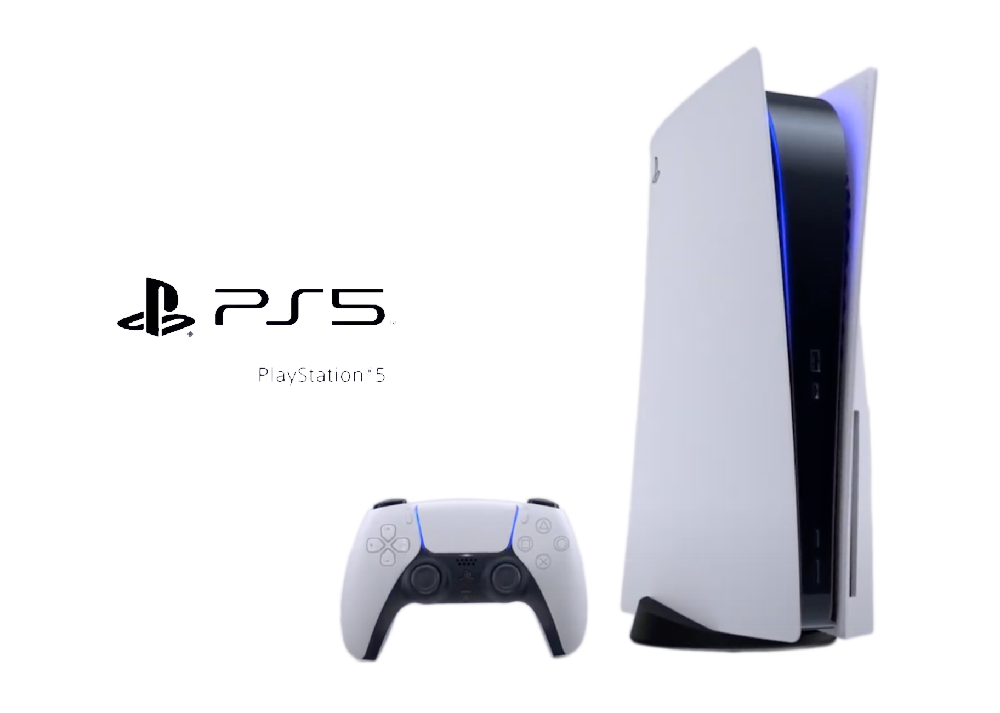

{{ playStore }}
PS1
PS2
PS3
PS4
PS5
PlaStation
Sony convida para "dar uma olhada no futuro dos jogos com o PlayStation " em transmissão ao vivo no canal da fabricante.
Sony convida para "dar uma olhada no futuro dos jogos com o PlayStation " em transmissão ao vivo no canal da fabricante.